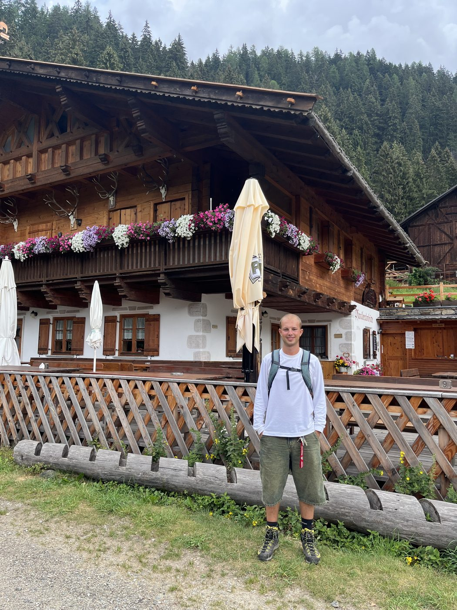
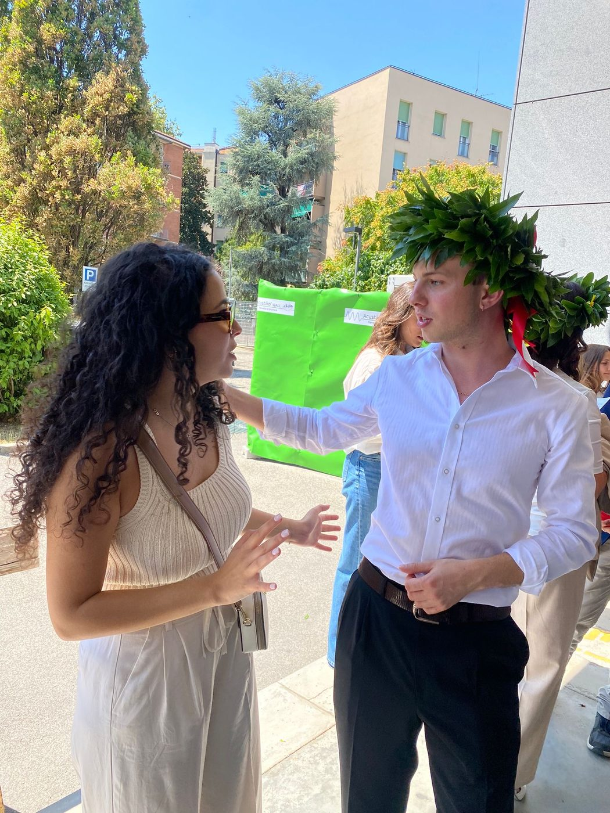
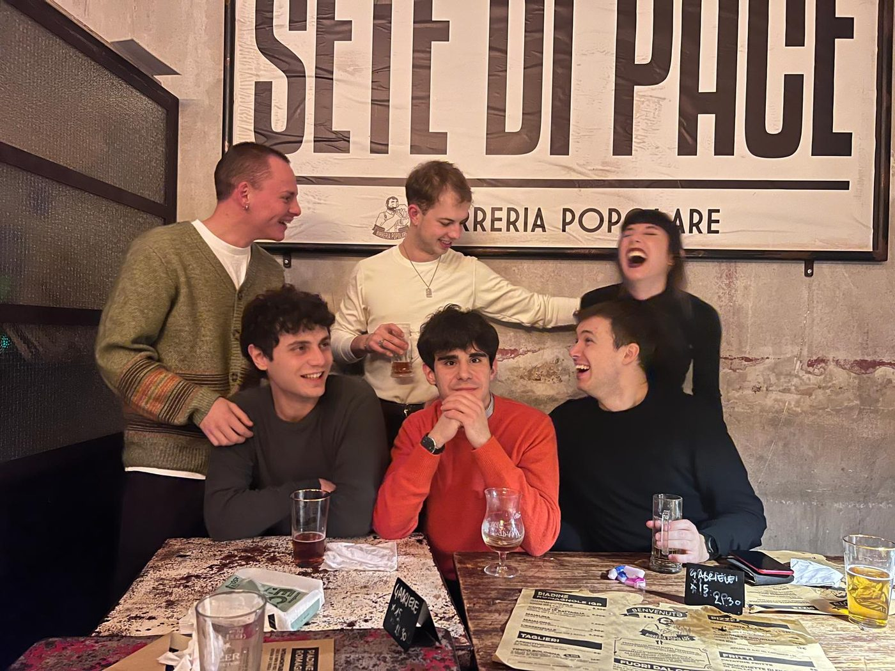
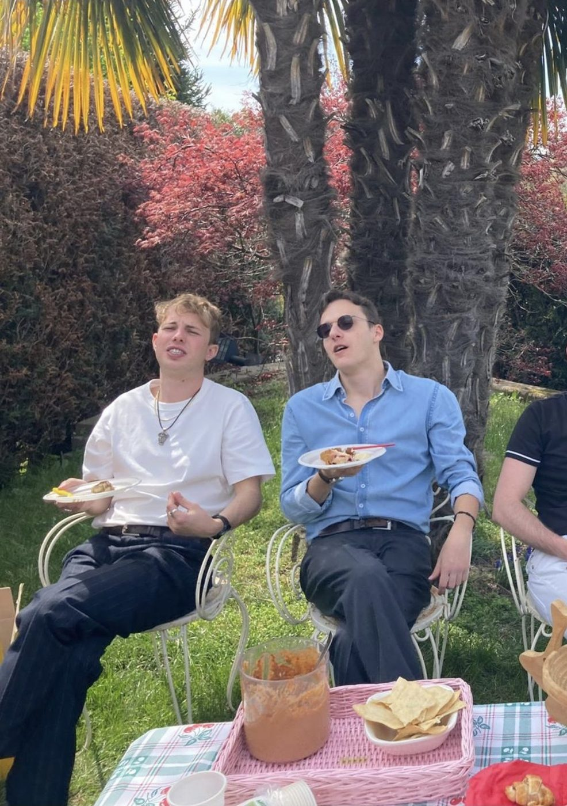
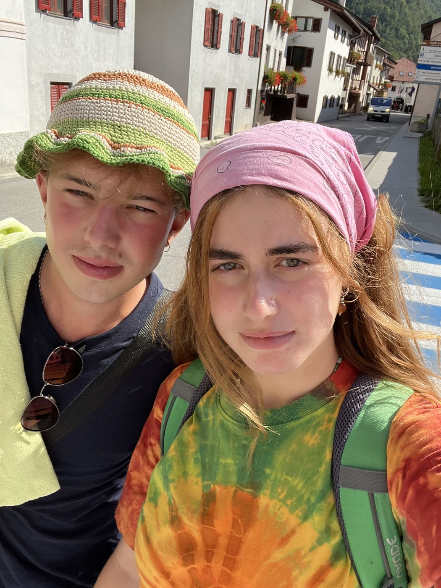

Elsewhere





Notes
- Maurizia (PhD Student at ETH Zurich, Economics) and I: you can find her research here. She has a working paper on how Ozempic affects work capacity; if you are interested, check it out here.↑
- Sofia is by education an urbanist, by employment a community worker, and by aspiration an (artsy) side-quester. Her research is on how social ties depend on power relations, and how that is reflected in physical spaces. Here you can find her non-academic thoughts on how fermentation is a tool and a symbol against alienating relationships with food, spaces and people.↑